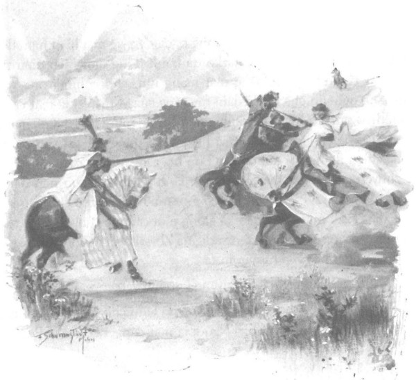
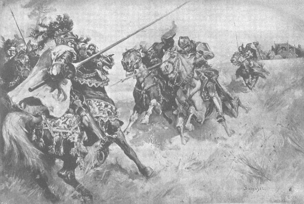

Trời đã ngả về chiều khá lâu trước khi quận chúa cùng đoàn tùy tùng rời vùng Tyniec hiếu khách để lên đường về Kraków. Mỗi khi sắp bước chân vào các thành phố hoặc thành trì phòng thủ để viếng thăm những nhân vật quan yếu, giới hiệp sĩ thời ấy thường nai nịt đầy đủ vũ khí và giáp phục. Cũng theo phong tục đương thời, ngay sau khi bước qua cổng thành, họ lại tháo bỏ ngay khí giới khi nghe thấy chủ nhân tòa thành nói lên những lời thiêng liêng đã được ban ơn lành sau đây: “Hãy tháo bỏ vũ khí, thưa ngài, bởi ngài đã đến với những người bạn!” Dẫu sao, việc trang bị đầy đủ nhung y tiến vào thành theo kiểu chiến sĩ vẫn oai vệ hơn, làm tăng thêm giá trị của trang hiệp sĩ. Nên muốn có được vẻ đàng hoàng uy nghi ấy, ông Maćko và Zbyszko liền khoác lên người bộ giáp phục với những tấm giáp che vai tuyệt hảo đã cướp được của các hiệp sĩ xứ Fryzja - đó là những giáp sắt màu sáng lấp lánh, có cài xen những sợi chỉ bằng vàng ròng để trang trí. Hiệp sĩ Mikołaj xứ Dlugolas - kẻ trong đời từng chu du khắp thế gian, mắt từng gặp biết bao hiệp sĩ tuấn kiệt, rất am tường chuyện chiến chinh - nhận ra rằng đó là thứ giáp phục do các hiệp sĩ xứ Mediolan làm ra, mà chỉ những hiệp sĩ giàu có phong lưu nhất mới sắm nổi, mỗi bộ quả là cả một gia tài lớn. Vì vậy, có thể đoán rằng những hiệp sĩ xứ Fryzja kia chắc hẳn phải là những nhân vật lẫy lừng ở quê hương họ, và cũng bởi vậy, ông càng thêm thán phục ông Maćko và Zbyszko hơn nữa. Những chiếc mũ sắt của họ tuy không phải loại xoàng nhưng không được quý giá đến thế. Riêng mấy con chiến mã cao lớn với yên cương tuyệt mỹ khiến cả đám quần thần đều thán phục và ghen tị. Ngồi trên những chiếc yên cao ngất nghểu khác thường, ông Maćko và Zbyszko như bề trên nhìn xuống đám quần thần của quận chúa. Trong tay họ cầm một ngọn trường thương, bên lưng đeo thanh kiếm, với một lưỡi rìu chiến giắt cạnh yên. Khiên thì họ để trên xe cho nhẹ; tuy không mang khiên song nom họ cứ như những chiến sĩ đang chuẩn bị giáp trận chứ không phải những người sắp vào thành đô.
Cả hai cưỡi ngựa đi cạnh xe nhỏ; trong xe, quận chúa và Danusia ngồi ghế sau, ghế trước là bà thị nữ Ofka, một người rất chín chắn, vợ góa của hiệp sĩ Krystyn xứ Jarząbkowo, ngồi cùng hiệp sĩ Mikołaj xứ Dlugolas. Mắt Danusia như bị dán chặt vào hai trang hiệp sĩ giáp phục đầy người. Còn quận chúa chốc chốc lại rút chiếc hộp đựng thánh tích của Thánh Ptolomeusz ra đưa lên môi hôn.
- Ta tò mò quá thể, không rõ chiếc xương trong hộp nom ra sao, - lát sau bà thốt lên, - nhưng tự ta, ta chẳng dám đường đột mở ra đâu, e xúc phạm đến đức thánh thiêng liêng. Ta sẽ nhờ đức giám mục Kraków mở hộ.
Nghe thấy thế, vốn là người cẩn trọng, hiệp sĩ Mikołaj bèn nói:
- Hey! Tốt nhất chẳng nên để vật này rời khỏi tay, thưa quận chúa, bởi đây là món bảo vật quá đỗi hấp dẫn.
- Có lẽ ông nói phải. - Quận chúa nói sau một hồi lâu cân nhắc, rồi bà thêm vào. - Đã lâu, chưa ai mang lại cho ta niềm sung sướng lớn lao như đức đan viện phụ phúc thiện, cả vì món quà quý này lẫn việc người đã khiến ta yên tâm về các thánh tích của bọn Thánh chiến.
- Đức cha nói rất thông thái và công bình. - Ông Maćko trang Bogdaniec lên tiếng. - Khi tấn công thành Wilno, chúng cũng mang theo nhiều thánh tích lắm chứ, hơn nữa lại muốn thuyết phục mọi người là chúng đi đánh dân tà giáo. Nhưng kết cục thì sao? Chúng tôi đã tận mắt thấy rõ: hễ cứ nhổ nước bọt xoa tay mà vung rìu lên thì mũ sắt chúng cũng cứ rơi, đầu chúng cũng cứ rụng như thường. Các thánh quả có trợ giúp thật - nói khác đi thì phải tội! - nhưng chỉ giúp những ai công minh chính đại, bước vào trận mang theo chính nghĩa và nhân danh Đức Chúa mà thôi. Tâu lệnh bà, tôi cũng nghĩ như đức đan viện phụ, nếu cuộc chiến tranh lớn nổ ra thì dù tất tật bọn Đức có hùa theo giúp sức quân Thánh chiến, chúng ta cũng sẽ giết chúng như ngả rạ thôi, bởi lẽ dân tộc ta vĩ đại, lại được Chúa Giêsu ban cho nhiều sức lực tự trong xương cốt. Còn nói về thánh tích, thì đâu phải trong tu viện tại Swiętokrsyski của ta không có một mẩu gỗ của cây thánh giá thiêng liêng?
- Phải lắm, quả là Đức Chúa lòng lành! - Quận chúa trả lời. - Nhưng có điều ở ta, mảnh gỗ ấy để yên trong tu viện, còn chúng thì lại chở theo bên người khi cần.
- Cũng như nhau thôi, tâu lệnh bà. Sức mạnh của Chúa không hề biết đến khoảng cách.
- Có đúng thế không? Ông hãy nói ta nghe, có đúng thế không? - Quận chúa ngoảnh sang hỏi ông Mikołaj xứ Dlugolas uyên thâm.
Ông đáp:
- Điều ấy bất cứ giám mục nào cũng đều có thể xác nhận. Roma xa xôi là thế mà Đức Giáo hoàng còn trị vì được thế gian, nữa là Chúa.
Những lời ấy khiến quận chúa hoàn toàn yên tâm, vì vậy bà chuyển sang bàn chuyện về Tyniec và những điều tuyệt vời của đan viện. Dân cư vùng Mazury không chỉ kinh ngạc trước sự giàu có của đan viện mà còn ngạc nhiên trước vẻ phong lưu của cả vùng đất mà họ đang đi qua lúc này. Chung quanh là những làng mạc trù phú, đủ đầy, những khu vườn cây trái sum sê, những rừng cây đoan có cò làm tổ trên ngọn, bên dưới xếp đầy các đõ ong đậy nắp bằng rơm. Suốt bên đường trải dài những ruộng ngũ cốc đủ loại. Chốc chốc gió lại làm chao đưa cả biển lúẢ Rập rờn, giữa những bông lúa còn xanh vươn cao, dày như sao trên trời, nhấp nháy những ngọn thỉ xa cúc xanh thắm cùng những đóa anh túc đỏ nhạt. Xa xa, phía bên kia những cánh đồng ngũ cốc, khi thì nổi lên một vệt rừng đen thẳm, khi là những dải rừng sồi và cây tống quá sủ tắm nắng rực rỡ làm vui mắt nhìn, khi lại là những cánh đồng cỏ ẩm ướt với những cánh hải âu chao lượn trên những đầm lầy ngập nước, rồi lại đến những ngọn đồi với nhà cửa chi chít, tiếp theo lại là đồng lúa. Rõ ràng vùng đất này là nơi sinh sống của những cư dân đông đúc và cần cù, thích trồng trọt canh tác. Rộng dài đến tít tắp chân trời, mảnh đất này không chỉ tràn trề sữa thơm và mật ngọt mà còn mang vẻ thanh bình và hạnh phúc.
- Vương quốc của Kazimierz Vĩ Đại quả là một sản nghiệp đế vương, - quận chúa thốt lên, - những chỉ muốn sống nơi đây mà không phải nhắm mắt xuôi tay.
- Đức Chúa Giêsu mỉm cười với mảnh đất này, - ông Mikołaj xứ Dlugolas tiếp lời, - và ân phước của Chúa Trời hằng ngự trị nơi đây. Vả, làm sao khác được, bởi chốn đây khi tiếng chuông ngân nga, chẳng xó xỉnh nào không được vang vọng tới. Bọn quỷ dữ ma ác không tài nào chịu nổi tiếng chuông nhà thờ, phải trốn chạy vào những khu rừng câm đặc tận biên giới nước Hung. [74]
- Vậy thì cũng lạ, - bà Ofka, vợ góa của hiệp sĩ Krystyn xứ Jarząbkowo nói, - là tại sao hồn ma chàng Walgier Tuấn Tú mà các đan sĩ vừa kể lại có thể hiện ra ở Tyniec, nơi mỗi ngày nhà thờ thỉnh chuông đến bảy lần?
Câu hỏi đó khiến hiệp sĩ Mikołaj bối rối mất một thoáng, nhưng sau khi ngẫm nghĩ, ông đáp:
- Trước hết, người trần mắt thịt chúng ta không thể thấu hiểu những điều phán quyết của Chúa; hai nữa, bà cũng phải nên biết rằng mỗi lần y hiển hiện đều phải được phép của Chúa cả đấy.
- Cứ cho là đúng như ông nói, nhưng tôi vẫn mừng là ta không trú đêm lại đan viện. Tôi đến chết vì kinh hãi mất thôi nếu nhỡ hồn ma của con người khổng lồ ấy hiện lên.
- Hey! Cũng chưa biết đâu mà nói trước; người ta đồn rằng anh chàng ấy đẹp trai lắm đấy!
- Dù anh ta có xinh đẹp đến đâu chẳng nữa, tôi cũng chẳng muốn nhận cái hôn từ đôi môi sặc mùi lưu hoàng kia đâu.
- Sao bà đã vội nghĩ là anh ta muốn hôn bà?
Quận chúa, rồi tiếp đó ông Mikołaj và hai hiệp sĩ trang Bogdaniec đều phá lên cười. Cả Danusia cũng cười theo, dẫu nàng không hiểu tại sao. Còn bà Ofka xứ Jarząbkowo ngoảnh bộ mặt sưng sỉa sang phía ông Mikołaj xứ Dlugolas mà bảo:
- Thà phải hôn anh ta còn hơn là hôn ông.
- Ấy, chớ có mà gọi sói trong rừng ra, - vị hiệp sĩ vùng Mazury vui vẻ thốt lên, - ma quỷ hay lang thang dọc đường cái quan giữa Kraków và Tyniec lắm đấy, nhất là những lúc trời chạng vạng tối thế này. Nhỡ nó nghe thấy lại hiện hình thành một người khổng lồ ngay trước mặt bà thì khốn!
- Phỉ phui nhà ông đi! - Bà Ofka thốt lên.
Đúng lúc ấy, ông Maćko trang Bogdaniec đang cưỡi con ngựa đực cao to lực lưỡng, có thể nhìn xa hơn những người ngồi trong xe, chợt kéo mạnh cương và thốt lên:
- Ôi, lạy Chúa lòng lành, cái gì kia vậy?
- Cái gì?
- Một người khổng lồ nào đó từ phía sau đồi vừa hiện ra ngay trước mặt ta kìa!
- Lời nói hiện thành người rồi! - Quận chúa kêu lên. - Các người chớ dại mồm nói những điều vớ vẩn mà khốn đấy!
Zbyszko nhổm người trên bàn đạp yên ngựa, thốt lên:
- Nhanh thật! Một người khổng lồ, đích thực chàng Walgier, chẳng phải ai khác đâu!
Nghe thấy thế, người xà ích hoảng hốt ghìm ngay ngựa lại, tay không rời đây cương mà bắt đầu làm dấu thánh, bởi lẽ ngồi trên ghế đánh xe cao lênh khênh, bác cũng đã trông thấy hình dáng khổng lồ của người kỵ sĩ sừng sững trên quả đồi đối diện.
Quận chúa cũng nhổm lên nhìn rồi ngồi phịch ngay xuống, mặt biến sắc vì kinh hoàng. Danusia giấu đầu vào giữa các nếp váy của quận chúa. Đám quan nhân, thị nữ và ca công cưỡi ngựa theo sau xe, nghe thấy cái tên ghê gớm nọ cũng đều túm tụm lại quanh xe. Đàn ông tuy vẫn tỏ ra cười cợt nhưng trong mắt đã hiện lên những ánh lo ngại, đàn bà thì mặt mày đã tái xanh tái xám. Riêng hiệp sĩ Mikołaj xứ Dlugolas, người đã ăn cơm thiên hạ đến mòn răng, thì vẫn giữ nguyên vẻ mặt bình thản, cất tiếng nói để quận chúa yên lòng:
- Đừng sợ, thưa lệnh bà. Mặt trời đã lặn đâu, mà dẫu đêm có buông xuống thì Thánh Ptolomeusz vẫn đương đầu được với hồn ma Walgier kia mà.
Trong khi đó, người kỵ sĩ vô danh kia dừng ngựa lại, đứng yên bất động trên chỏm đồi trước mặt. Trong ánh mặt trời đang lặn, có thể thấy rõ nét người ấy, và quả thực vóc dáng ông ta có vẻ to lớn quá đỗi, vượt hẳn tầm vóc người thường. Khoảng cách giữa kỵ sĩ với đoàn người ngựa của quận chúa không quá ba trăm bước chân.
- Sao hắn dừng lại thế nhỉ? - Một ca công cất tiếng hỏi.
- Vì chúng ta cũng dừng lại đấy mà. - Ông Maćko đáp.
- Hắn đang nhìn về phía ta, hình như đang chọn xem nên bắt ai đấy. - Người ca công thứ hai nhận xét - Nếu biết chắc đó là người chứ không phải hồn ma, tôi dám phóng ngựa lại gần phang cho hắn chiếc đàn luýt vào đầu.
Đám phụ nữ kinh hoàng thật sự, bắt đầu lớn tiếng cầu nguyện. Muốn tỏ rõ lòng can đảm trước quận chúa và Danusia, Zbyszko bèn thốt lên:
- Tôi vẫn cứ xông lên! Với tôi, Walgier thì mùi mẽ gì!
Nghe chàng nói, Danusia kêu lên, tiếng nghe đã có phần nức nở: - Zbyszko! Anh Zbyszko!
Nhưng chàng trai đã phóng ngựa mỗi lúc một xa, vững tin rằng dẫu gặp phải Walgier thật thì vẫn có thể xiên cho y một mũi giáo như thường.
Vốn có đôi mắt tinh tường, ông Maćko chợt nói:
- Nom y có vẻ khổng lồ vì y đứng trên đồi, chứ thực ra tuy to lớn song y cũng chỉ là người trần thôi. Ôi! Tôi cũng phải phóng lên trước mới được, để tránh chuyện đụng độ giữa y với Zbyszko!
Trong khi đó, Zbyszko đang cho ngựa phi nước kiệu và suy tính xem đã nên chĩa giáo ra chưa, hay trước hết nên đến gần giáp mặt kẻ đang cưỡi ngựa trên đồi kia đã. Rồi chàng quyết định trước hết nên gặp xem đã, và ngay lập tức sau đó chàng thấy ngay rằng quyết định ấy là sáng suốt, bởi càng tiến đến gần, người lạ kia càng mất dần vẻ khổng lồ. Đó là một người đàn ông cao lớn, lại cưỡi trên con ngựa lực lưỡng, to hơn cả con ngựa đực của Zbyszko, nhưng không có gì là siêu nhiên. Người đó lại không mặc giáp phục, đầu đội một chiếc mũ nhung hình chuông, ngoài khoác chiếc áo choàng rộng không tay màu trắng, bụi đường phủ mờ mờ, bên dưới lộ ra chiếc áo dài màu xanh lục. Người ấy đứng trên đồi ngẩng đầu cầu nguyện. Hẳn ông ta dừng ngựa chỉ cốt để đọc nốt bài kinh chiều mà thôi.
“Ấy, thế mà ta đã ngỡ là Walgier!” Chàng trai nghĩ thầm.
Ngựa chàng đã đến gần, có thể chạm giáo vào người kỵ sĩ lạ mặt Người kia, khi thấy một hiệp sĩ trang bị tuyệt mỹ đứng trước mặt, bèn mỉm cười thốt lên:
- Sáng danh Chúa Giêsu Ki-tô!
- Đời đời!
- Dưới kia phải chăng là đoàn tùy tùng của quận chúa Mazowsze?
- Chính vậy!
- Các vị vừa rời Tyniec đấy chăng?
Nhưng câu hỏi ấy không có lời đáp, bởi Zbyszko đang bàng hoàng đến nỗi không nghe thấy câu hỏi. Chàng đứng lặng người như đã hóa đá, không tin vào mắt mình: cách chừng một phần tư dặm sau lưng người kỵ sĩ không quen biết nọ, chàng chợt nhìn thấy khoảng mươi tên lính kỵ, dẫn đầu và vượt hẳn lên trước là một trang hiệp sĩ giáp phục sáng lòa, với chiếc áo choàng bằng da trắng mang hình cây thập tự đen và chiếc mũ sắt có đính ngù lông công tuyệt đẹp trên chóp đỉnh.
- Một thằng Thánh chiến! - Zbyszko thốt lên.
Thấy cảnh tượng ấy, chàng chợt nghĩ ngay rằng những lời cầu nguyện của chàng đã được nghe thấu, và trong niềm từ tâm, Chúa đã gửi đến cho chàng tên Đức mà chàng từng cầu xin lúc còn ở Tyniec. Bụng bảo dạ phải đón nhận ngay niềm ưu ái của Chúa, nên không ngần ngừ một giây, trước khi kịp suy nghĩ, trước khi đủ thì giờ thoát khỏi nỗi sửng sốt, chàng đã cúi rạp người trên yên ngựa, đặt ngọn giáo vào giữa hai tai tuấn mã, thét vang tiếng thét xung trận “Mưa đá! Mưa đá!” của dòng họ, rồi lao thẳng ngựa về phía tên hiệp sĩ Thánh chiến.
Gã hiệp sĩ cũng thảng thốt không kém, dừng ngựa lại, nhưng không rút ngọn thương vốn mũi vẫn đang chĩa lên trời, cán tì vào bàn đạp, mắt gã nhìn sửng sốt như không hiểu liệu phải chăng người ta đang chĩa mũi giáo vào mình.
- Chĩa thương ra! - Zbyszko vừa thét lên vừa chọc đôi cựa sắt ở gót giày vào sườn ngựa. - Mưa đá! Mưa đá!
Khoảng cách giữa hai người giảm đi nhanh chóng. Rốt cuộc gã hiệp sĩ Thánh chiến cũng hiểu ra rằng gã đang bị tấn công. Gã liền ghì ngựa, chĩa vũ khí ra. Chỉ còn chút nữa, mũi giáo của Zbyszko đã chạm vào ngực gã. Đột nhiên, một cánh tay cực kỳ mạnh mẽ tóm lấy mũi giáo và bẻ nó gãy vụn ra như một cây sậy khô - chỗ gãy ngay sát tay cầm của Zbyszko - rồi cũng chính bàn tay ấy ghì cương ngựa của chàng mạnh đến nỗi con ngựa quỵ cả bốn vó xuống đất mà đứng yên như bị chôn chặt chân vào đấy.
- Thằng điên này, ngươi làm gì vậy? - Một giọng trầm dữ tợn quát lên. - Chĩa giáo vào sứ giả, ngươi định coi thường đức vua chăng?

Gã Hiệp sỹ thánh chiến liền ghì ngựa, chĩa vũ khí ra
Zbyszko ngoảnh lại, nhận ra đó chính là người đàn ông khổng lồ mà đám đình thần của quận chúa vừa hoảng hồn tưởng là chàng Walgier lúc nãy.
- Buông ra cho ta đánh thằng giặc Đức! Ông là ai? Chàng hét lên, nắm vội chiếc cán rìu.
- Buông ngay rìu ra! Lạy Chúa lòng lành! Buông ngay rìu ra! Ta bảo kìa! Nếu không ta sẽ cho ngươi ngã ngựa ngay bây giờ! - Người lạ mặt quát lên bằng giọng dữ tợn hơn. - Ngươi đã phạm tội khi quân, sẽ phải ra tòa lãnh án!
Rồi ngoảnh lại những kẻ cưỡi ngựa đi sau lưng tên hiệp sĩ Thánh chiến, ông lớn tiếng:
- Xin chào!
Đúng lúc đó ông Maćko phóng ngựa đến, vẻ mặt hầm hầm đầy phẫn nộ. Ông hiểu rằng Zbyszko đã hành động một cách điên rồ, việc này có thể khiến chàng mất mạng như chơi, nhưng ông vẫn sẵn sàng nghênh chiến. Cả đám tùy tùng của vị hiệp sĩ lạ mặt cùng đám theo sau tên hiệp sĩ Thánh chiến chỉ độ mười lăm người, mang theo giáo và cung nỏ, thì hai vị hiệp sĩ vũ trang đầy đủ vẫn có hy vọng chiến thắng khi đương đầu bọn họ. Ông Maćko nghĩ rằng nếu vì chuyện gây sự này mà phải ra tòa lãnh án thì tốt hơn nên đánh thắng đám người này rồi ẩn trốn ở một nơi nào đó, chờ cho bão táp lắng đi. Vì vậy, mặt ông nhăn lại giống một cái mõm sói chực cắn xé con mồi, rồi ông lao ngựa xen vào giữa Zbyszko và người đàn ông lạ mặt, vừa quát hỏi vừa rút gươm ra:
- Ngươi là ai? Ngươi có quyền gì gí mũi vào?
- Ta có quyền, bởi chính đức vua đã lệnh cho ta phải canh giữ trật tự và an ổn trong vùng. - Người lạ mặt đáp. - Tên ta là Powała xứ Taczew. [75]

Người đàn ông lạ mặt ngăn cản Zbyszko tấn công gã Hiệp Sỹ Thánh chiến
Nghe những lời ấy, ông Maćko và Zbyszko giương tròn mắt nhìn người hiệp sĩ nọ, vội đút ngay vũ khí đang rút nửa chừng vào vỏ, rồi cùng cúi đầu. Không phải họ sợ hãi, mà họ cúi đầu trước cái tên lừng lẫy đã từng được nghe đồn đại bao phen. Hiệp sĩ Powała xứ Taczew là một vị quý tộc có dòng dõi cao sang, một trang chủ giàu có, chủ nhân những vùng đất bao la quanh vùng Radom, một trong những hiệp sĩ lừng danh nhất toàn vương quốc. Các ca công thường hát tên ông trong các khúc ca, coi ông như mẫu mực của danh dự và lồòng can đảm, ngợi ca ngang với tên tuổi các hiệp sĩ như Zawisza xứ Garbów, Farurej và Skarbek xứ Góra, Dobko xứ Oleśnica, Jaśko xứ Naszan, Mikołaj xứ Moskorzew và Zyndram xứ Maszkowice. Hơn nữa, ông vừa xưng danh là người làm theo lệnh đức vua, tấn công vào ông lúc này chẳng khác gì đút đầu vào dưới lưỡi rìu đao phủ.
Bình tĩnh lại phần nào, ông Maćko liền cất giọng trang trọng:
- Xin kính chào hiệp sĩ, kính chào áng vinh quang và lòng can trường lừng lẫy của ngài!
- Tôi cũng xin chào ông, - hiệp sĩ Powała nói, - mặc dầu tôi không muốn phải quen biết với ông trong một hoàn cảnh gay cấn như thế này.
- Sao kia ạ? - Ông Maćko hỏi lại.
Hiệp sĩ Powała hướng sang phía Zbyszko:
- Gã trẻ tuổi kia, ngươi làm gì vậy? Ngay trên đường cái quan sát cạnh đấng kim thượng mà ngươi dám đường đột tấn công sứ giả! Ngươi có biết điều gì đang đợi ngươi không?
- Cháu nó nhỡ tấn công sứ giả bởi nó quá trẻ người non dạ, nghĩ chậm hơn làm. - Ông Maćko phân trần. - Cúi xin ngài đừng kết tội cháu quá nghiêm khắc. Tôi xin được tâu trình tình đầu câu chuyện với ngài.
- Ta không phải là người sẽ xử tội hắn. Việc của ta chỉ là trói hắn lại thôi…
- Kìa, thưa ngài! - Ông Maćko thốt lên, đưa mắt rầu rĩ nhìn khắp lượt - Sao lại thế?
- Tuân theo chỉ dụ của đức vua.
Im lặng bao trùm sau những lời ông vừa thốt ra.
- Nhưng cháu nó dẫu sao cũng là một trang quý tộc. - Sau cùng, ông Maćko thốt lên.
- Vậy hắn phải thề trên danh dự hiệp sĩ rằng hắn sẽ có mặt ở tòa để lãnh án.
- Tôi xin thề trên danh dự hiệp sĩ của mình! - Zbyszko nói.
- Vậy thì được. Họ tên các ngươi là gì?
Ông Maćko xưng danh và gia huy.
- Nếu các ngươi là đình thần của quận chúa Mazowsze thì hãy tâu trình quận chúa đến gặp đức vua xin giảm tội cho.
- Chúng tôi không thuộc đoàn tùy tùng của quận chúa, thưa ngài. Chúng tôi đang trên đường từ Litva, chỗ đại quận công Witold trở về. Giá như chúng tôi đừng gặp đoàn tùy tùng của quận chúa cho xong! Chính vì cuộc gặp gỡ ấy mới có nỗi bất hạnh giáng xuống đầu con trẻ thế này!
Nói đoạn, ông Maćko bắt đầu thuật lại những điều xảy ra trong tửu quán. Ông kể lại cuộc gặp gỡ đoàn tùy tùng của quận chúa và việc Zbyszko tuyên thệ. Kể đến cuối, đột nhiên ông nổi cơn tam bành với Zbyszko, kẻ đã hành động thiếu chín chắn khiến cả hai rơi vào hoàn cảnh nan giải nhường này, nên ông ngoảnh về phía thằng cháu và thét lớn:
- Sao mày không chết mất xác ở thành Wilno cho rồi! Đồ lợn non háu dũi, mày nghĩ ra cái trò hay hớm chưa!
- Thôi đi chú. - Zbyszko phân trần. - Sau khi thề nguyện, cháu đã cầu xin Đức Chúa Giêsu mang bọn Đức đến cho cháu rửa thù, và cháu hứa sẽ dâng lễ cho Người. Vì vậy, khi trông thấy chỏm lông công với chiếc áo choàng có hình thánh giá đen, một tiếng nói chợt vang lên trong lòng cháu: “Hãy xông tới đánh thằng Đức kia đi, bởi chính phép mầu đem nó tới đấy!” Thế là cháu bèn xông ngay lại. Mà ai có thể không xông ngay lại kia chứ?
- Ngươi hãy nghe đây. - Hiệp sĩ Powała ngắt lời chàng. - Ta chẳng mong điều dư cho các ngươi, bởi ta thấy rõ gã trai kia phạm lỗi chẳng qua vì nóng vội hơn là thù hận. Ta cũng muốn bỏ qua coi như không thấy hành vi của hắn, đi tiếp như chẳng có chuyện gì xảy ra. Nhưng ta chỉ có thể làm điều ấy nếu viên lãnh binh kia hứa sẽ không tâu trình đức vua. Các ngươi hãy cầu xin y điều đó, biết đâu y cũng thông cảm, không muốn trừng trị một gã thiếu niên.
- Thà ra tòa chịu tội chứ tôi không thèm lạy lục một thằng Thánh chiến! - Zbyszko hét lên. - Như thế không xứng với danh dự hiệp sĩ của tôi.
Nghe chàng nói, hiệp sĩ Powała xứ Taczew nghiêm nghị nhìn chàng, bảo:
- Ngươi lầm rồi. Người cao tuổi hiểu rõ hơn ngươi việc gì xứng và việc gì không xứng thanh danh hiệp sĩ. Người đời đã từng nghe danh ta, vậy nên ta bảo ngươi: nếu ta phạm phải một hành động như ngươi vừa rồi, ta cũng sẽ không chút hổ thẹn xin người ta tha lỗi đâu.
Zbyszko xấu hổ, nhưng chàng vẫn bướng bỉnh nhìn quanh rồi nói:
- Đất quanh đây bằng phẳng, chỉ cần giẫm thêm chút ít là có bãi đấu trường. Thay vì xin lỗi thằng giặc Đức, tôi muốn thà quyết đấu sống mái với hắn, dù trên ngựa hay trên bộ, chịu chết hay chịu bị bắt làm nô lệ.
- Đồ ngu! - Ông Maćko cắt ngang. - Mày là cái thớ gì mà dám đòi đấu với sứ giả? Mày không xứng để đấu với ông ta, ông ta cũng chẳng thèm đấu với đồ trẻ ranh vắt mũi chưa sạch như mày.
Nói đoạn, ông quay sang phía hiệp sĩ Powała:
- Xin tôn ông tha lỗi. Trải chinh chiến, thằng cháu tôi đã trở nên cuồng khấu quá đỗi. Nhưng xin ngài đừng bắt nó phải xin xỏ gã người Đức kia, e nó nỏ mồm chửi bới người ta thêm phiền. Tự tôi, đích thân tôi sẽ xin lỗi hắn. Còn như sau khi hắn kết thúc nhiệm vụ sứ giả, nếu tay lãnh binh kia muốn quyết đấu tay đôi, thì tôi đây rất sẵn lòng nghênh chiến.
- Đó là một hiệp sĩ dòng dõi cao sang, không phải với bất kỳ ai ông ta cũng đấu đâu. - Hiệp sĩ Powała nói.
- Sao lại thế? Đâu phải tôi chưa được đeo đai và chưa được mang cựa gót? Ngay cả các quận công cũng chịu đấu với tôi kia mà!
- Đúng vậy, nhưng xin ông chớ tự mình thách hắn, trừ phi chính hắn tự nói ra thì không kể, bởi nếu không hắn chẳng chịu bỏ qua chuyện này. Thôi, cầu Chúa che chở cho các vị.
- Tao phải chịu nhún mình vì mày vậy. - Ông Maćko bảo Zbyszko. - Cứ đứng yên đợi đấy!
Nói đoạn, ông tiến lại gần gã hiệp sĩ Thánh chiến đang ghìm ngựa cách đó vài bước. Hắn ngồi yên như một pho tượng bằng đồng trên con ngựa cao lớn như lạc đà, thản nhiên lắng nghe những lời trao đổi vừa rồi. Suốt thời chiến chinh liên miên, ông Maćko cũng học được đôi chút tiếng Đức, nên bèn dùng thứ tiếng ấy giải thích cho viên lãnh bỉnh chuyện vừa rồi, biện bạch cho sự trẻ người non dạ và tính hăng máu của chàng trai - kẻ hồ đồ tưởng rằng Chúa gửi một hiệp sĩ mang ngù lông công trên mũ tới theo lời cầu nguyện của mình. Rồi sau rốt, ông xin gã tha cho Zbyszko.
Nét mặt gã lãnh binh không chút rung động. Người thẳng đơ, đầu ngẩng cao, gã giương đôi mắt màu thép xám nhìn ông Maćko đang phân trần, lạnh lùng và khinh khi, như không phải đang nhìn một trang hiệp sĩ, hay thậm chí một con người, mà như đang nhìn chiếc cọc hàng rào thảm hại vậy. Vị trang chủ Bogdaniec cũng nhận ra điều đó, nên mặc dù đang thao thao tuôn ra những lời lẽ nhún nhường, nhưng trong lòng đã sôi máu, mỗi lúc một cảm thấy khó nói hơn, đôi má dày dạn phong sương ửng đỏ. Trước vẻ cao ngạo kia, chắc ông phải cố nén lòng để khỏi nghiến răng hoặc nổi khùng.
Thấy thế, là người vốn nhân hậu, hiệp sĩ Powała quyết định đỡ lời ông Maćko. Suốt thời trai trẻ đã bao phen tìm thú phiêu lãng khắp các triều đình, từ Hung, Rakusy [76] , đến triều đình Burgundia và Séc, biết bao chuyện phiêu lưu kỳ thú đã khiến ông lừng danh. Ông cũng biết tiếng Đức, lúc này ông bèn dùng tiếng ấy khuyên ông Maćko, giọng cố pha trò:
- Hiệp sĩ thấy đấy, ngài lãnh binh cao quý đây coi chuyện vừa rồi chẳng đáng ngài phí lời. Không chỉ ở vương quốc này, mà khắp nơi trên trần thế, bọn thiếu niên măng sữa làm sao đã có đủ trí khôn? Một hiệp sĩ mã thượng phong lưu như ngài lãnh binh đây chẳng lẽ đâu lại tranh hơn thua với chúng, dù bằng giáo gươm hay luật lệ.
Nghe ông nói, gã Lichtenstein vểnh bộ ria màu râu ngô đỏ quạch, không thèm nói một lời, thúc ngựa phóng qua trước mặt ông Maćko và Zbyszko.
Nỗi tức giận khiến tóc họ như dựng đứng cả lên dưới mũ sắt, tay họ run run quờ tìm chuôi kiếm.
- Mày cứ đợi đấy, đồ chó đeo thập tự! - Vị hiệp sĩ lớn tuổi trang Bogdaniec rít lên. - Tao thề nhất định sẽ tìm gặp mày khi mày thôi làm sứ giả!
Tim hiệp sĩ Powała cũng sôi máu, ông bảo:
- Chuyện đó để sau! Bây giờ, các ngươi phải cầu xin quận chúa bênh vực, nếu không thằng bé nguy đấy.
Nói dứt lời, ông phóng ngựa đuổi theo gã hiệp sĩ Thánh chiến, giữ gã lại, trò chuyện hồi lâu. Ông Maćko và Zbyszko để ý thấy gã hiệp sĩ Đức không dám vênh mặt khinh khỉnh như vừa nãy, và điều đó càng làm họ sôi sục tức giận. Lát sau, hiệp sĩ Powała quay trở lại, chờ cho gã Thánh chiến đi xa, ông bảo:
- Ta đã ngỏ lời xin hộ các ngươi, nhưng hắn quả là chai đá. Hắn bảo sẽ không thưa kiện nếu các ngươi làm theo đúng lời hắn.
- Hắn muốn gì vậy, thưa ngài?
- Hắn bảo: “Ta còn dừng chân ít phút đợi chào quận chúa Mazowsze. Bảo bọn chúng hãy đến đây, xuống ngựa, bỏ mũ sắt, đầu trần chân đất cầu xin - ta sẽ tha cho!”
Nói đoạn, hiệp sĩ Powała liếc nhanh Zbyszko rồi thêm:
- Đối với những người thuộc dòng dõi quý tộc, đó quả là điều khó chấp nhận đấy, ta hiểu chứ!… Nhưng ta phải báo trước cho ngươi biết: nếu không làm thế thì sẽ có chuyện chẳng lành, và rất có thể chính lưỡi gươm đao phủ đang chờ ngươi đó!
Vẻ mặt ông Maćko và Zbyszko như hóa đá. Im lặng bao trùm.
- Thế nào? - Hiệp sĩ Powała hỏi.
Zbyszko Bình tĩnh và trang nghiêm lên tiếng, dường như chỉ qua chốc lát vừa rồi chàng đã già thêm chục tuổi:
- Đành vậy, thưa ngài. Sức mạnh của Chúa luôn vượt trên nhân thế.
- Nghĩa là sao?
- Nghĩa là nếu tôi có tôi hai đầu, và nếu cả hai đều bị đao phủ chém, thì danh dự tôi vẫn chỉ có một, không ai được phép làm nhục danh dự đó.
Nghe thấy thế, mặt hiệp sĩ Powała danh lại, ông quay sang hỏi hiệp sĩ Maćko:
- Ông nghĩ sao?
- Thưa quý ngài, tôi đã nuôi dạy gã thiếu niên đây từ thuở ấu thơ… - Ông Maćko rầu rĩ đáp. - Dòng họ chúng tôi chỉ trông vào mỗi mình cháu, tôi thì già rồi. Nhưng xin xỏ thì nó chẳng chịu đâu, dẫu có phải mất đầu cũng cam.
Nói đến đây, vẻ mặt đầy khắc khổ của ông lão run run, và đột ngột, tình thương yêu đứa cháu ruột bùng lên trong lòng ông, mạnh mẽ đến nỗi ông bất giác ghì chặt cháu trong đôi tay bịt giáp sắt, nghẹn ngào thốt lên:
- Zbyszko! Zbyszko con ơi…
Chàng hiệp sĩ trẻ thảng thốt cố gỡ vòng tay chú, lùi ra xa và bảo:
- Cháu chẳng ngờ chú yêu cháu đến thế!…
- Hai người quả là các hiệp sĩ chân chính. - Ông Powała xúc động nói. - Một khi chàng trai đã thề danh dự sẽ tự ra trước tòa, ta không cần trói làm gì. Những người như các ngươi có thể tin được. Các ngươi cứ vững lòng! Gã người Đức còn lưu lại Tyniec khoảng một ngày nữa, ta sẽ được gặp đức vua sớm hơn hắn, và sẽ lựa lời tâu trình chuyện này với ngài để ngài bớt giận. Thật may ta đã kìm được ngọn giáo của ngươi đấy!
Zbyszko nói:
- Nếu đàng nào cũng chịu mất đầu thì xin ngài cho tôi được hưởng niềm an ủi cuối cùng: được dần xương thằng chó Thánh chiến kia cho hả!
- Ngươi muốn bảo vệ thanh danh cá nhân, nhưng sao chẳng chịu giữ gìn thanh danh cả dân tộc? - Hiệp sĩ Powała sốt ruột quát hỏi.
- Hiểu thì tôi vẫn hiểu, - Zbyszko đáp, - nhưng mà tức lắm…
Hiệp sĩ Powała bảo ông Maćko:
- Còn ông, chắc ông hiểu rằng nếu muốn cứu gã trai này thì phải chụp lên đầu gã một chiếc mũ trùm thật kín như người ta vẫn che đầu lũ chim ưng ấy. Nếu không, gã chẳng tránh khỏi mất mạng đâu.
- Có thể cứu được mạng cháu, nếu ngài làm ơn đừng tâu trình đức vua chuyện vừa xảy ra.
- Còn thằng Đức kia thì sao? Ta đâu thể buộc lưỡi hắn lại?
- Quả thế, quả là thế!
Họ vừa trò chuyện vừa quay trở lại với đám tùy tùng quận chúa. Những người đi theo hiệp sĩ Powała, trước đó đã nhập làm một với đám tùy tùng của Lichtenstein, bây giờ cùng kéo theo sau. Từ xa, giữa những chiếc mũ nhỏ kiểu Mazowsze nổi bật lên chỏm lông công ngất nghểu cùng chiếc mũ sắt màu trắng của gã hiệp sĩ Thánh chiến sáng loáng trong ánh mặt trời.
- Bản tính bọn hiệp sĩ Thánh chiến thật lạ lùng. - Vị hiệp sĩ xứ Taczew thốt ra như đang suy tư. - Nếu một thằng Thánh chiến sa vào cảnh khốn cùng, hắn sẽ rất biết cảm thông, hệt như một tín đồ dòng Franciskan, hắn sẽ nhẫn nhục như cừu, sẽ ngọt ngào như mật, khó có thể tìm đâu trên đời một kẻ tốt bụng và hiền lành hơn thế. Nhưng cứ thử để cho hắn cảm thấy có chút hơi hướng sức mạnh hỗ trợ sau lưng mà xem, khi ấy không kẻ nào có thể lên mặt kênh kiệu hơn, cũng chẳng thể có ai đáng ghét hơn hắn nữa. Chác hẳn Chúa Giêsu đã ban trong ngực chúng một hòn đá rắn thay vì trái tim. Ta đã từng gặp biết bao chủng người, đã bao lần thấy cảnh một hiệp sĩ chân chính tha chết cho hiệp sĩ khác thất thế, bảo hắn rằng: “Ta sẽ không vinh quang gì hơn nếu phanh thây một kẻ ngã ngựa.” Còn bọn Thánh chiến thì chính những lúc như thế, chúng mới thật chai đá, rắn lòng. Phải túm thật chặt lấy đầu chúng, đừng nới tay, nếu không sẽ bị nguy ngay với chúng! Gã sứ thần này cũng vậy! Đâu phải gã muốn người ta xin lỗi, gã chỉ muốn hạ nhục người ta đấy thôi! Ta thật lấy làm mừng vì chuyện đó không xảy ra!
- Hắn đừng có hòng! - Zbyszko thốt lên.
- Các ngươi hãy cứ thản nhiên, chớ để hắn nhận thấy các ngươi lo lắng, kẻo bụng hắn lại sướng rơn lên đấy.
Nói dứt những lời ấy, họ vừa vặn đến chỗ đoàn tùy tùng và hòa nhập vào đám đình thần của quận chúa. Trông thấy họ, gã sứ giả Thánh chiến làm ngay ra vẻ mặt kênh kiệu và khinh miệt, nhưng họ vờ như hoàn toàn không để ý đến hắn. Zbyszko đến cạnh Danusia, vui vẻ nói với nàng rằng đứng trên đồi thì nhìn rất rõ kinh thành Kraków. Ông Maćko kể cho một người ca công nghe sức mạnh phi thường của hiệp sĩ xứ Taczew, người đã dùng tay bẻ gãy vụn ngọn giáo của Zbyszko như bẻ một cành củi khô.
- Nhưng tại sao ngài hiệp sĩ lại phải bẻ giáo? - Người ca công hỏi lại.
- Bởi cháu tôi chĩa giáo vào gã người Đức, chỉ để đùa ấy mà.
Vốn là một trang chủ quý tộc từng trải, người ca công ấy nghĩ trò đùa thật chẳng lịch thiệp tí nào, nhưng thấy ông Maćko kể chuyện đó với giọng bình thường nên ông ta cũng chẳng để ý lắm. Cách cư xử tỉnh bơ của hai người khiến gã hiệp sĩ Đức cáu tiết. Hắn nhìn Zbyszko một rồi hai lần, sau đó nhìn ông Maćko, rốt cuộc hắn hiểu là họ sẽ không chịu xuống ngựa, hơn nữa đã cố tình không thèm để ý tới hắn. Mắt hắn chợt lóe lên một ánh sắc lạnh như thép, hắn vội vàng từ biệt quận chúa ra đi…
Lúc hắn đi, không kìm nổi, vị hiệp sĩ xứ Taczew bảo hắn:
- Hỡi hiệp sĩ can trường, xin ngài cứ vững tâm đi tiếp. Đất nước này rất yên ổn, sẽ không một ai tấn công ngài đâu, có chăng cũng chỉ là một đứa trẻ hay đùa nào đó thôi.
- Dù phong tục nơi đây thật quái lạ, tôi cũng không cầu xin sự che chở của ngài đâu, thưa hiệp sĩ, mà chỉ hy vọng được hân hạnh đồng hành với ngài đấy thôi! - Lichtenstein nói. - Chúng ta sẽ còn gặp lại nhau, không chỉ tại triều đình, mà tại nơi khác nữa, phải không thưa ngài?…
Những lời sau cùng của hắn chứa đựng hàm ý de dọa rõ ràng, nên hiệp sĩ Powała nghiêm trang đáp:
- Chúa sẽ cho được thế!…
Dứt lời, ông cúi mình chào, rồi quay lưng, nhún vai thốt lên, tuy khẽ nhưng cũng đủ cho mọi người chung quanh nghe thấy:
- Đồ bị thịt! Ta chỉ muốn xỉa ngay một mũi giáo, xốc tung mày lên khỏi yên, giơ lên trời để cho mày được vùng vẫy suốt ba bài kinh cho hả!
Rồi sau đó, ông trò chuyện với quận chúa Anna Danuta mà ông rất quen. Quận chúa hỏi ông đi có việc gì, ông thưa bà rằng tuân lệnh đức vua, ông đang tuần thám dọc đường để giữ trật tự, tránh xảy ra chuyện không hay trong thời buổi đông đảo khách thập phương đổ dồn về Kraków. Ông thuật lại việc vừa chứng kiến để lấy làm minh chứng cho điều đó, nhưng nghĩ rằng chắc sẽ còn thời gian và cơ hội thuận tiện xin quận chúa che chở cho Zbyszko, nên ông không đề cập đến tính nghiêm trong của cuộc đụng độ vừa rồi để khỏi làm mọi người mất vui.
Quận chúa cười, giễu Zbyszko quá hấp tấp, chỉ muốn đoạt ngay các ngù lông công. Khi biết hiệp sĩ xứ Taczew chỉ dùng một tay cũng bẻ gây vụn ngọn giáo, mọi người đều trầm trồ thán phục. Vốn đầy tự hào, ông hởi lòng khi nghe lời ca ngợi, và kể thêm những kỳ tích đã khiến ông lừng danh, nhất là ở công quốc Burgundia, tại triều đình quận công Filip Uy Dũng [77] , ở đó, trong một cuộc hội võ, có lần ông túm chặt giáo của một hiệp sĩ xứ Ardeny [78] và bẻ gãy vụn, rồi giật cổ y ra khỏi yên ngựa, tung y lên cao ngang tầm mũi giáo, trong khi trên người y vẫn mang đầy giáp sắt nặng trịch. Vì chiến công ấy, quận công Filip Uy Dũng đã ban tặng ông một dây chuyền vàng, còn quận công phu nhân thì tặng ông đôi hài nhung nhỏ mà đến bây giờ ông vẫn còn đeo trên mũ sắt.
Chuyện ấy làm cho mọi người đều thán phục, trừ hiệp sĩ Mikołaj xứ Dlugolas. Hiệp sĩ bảo:
- Vào thời buổi đàn ông yếu ớt như này, không còn đâu những người khỏe mạnh như thuở tôi còn trai trẻ hay thời phụ thân tôi nữa. Bây giờ, hễ có ai xé rách được giáp sắt, lên dây nỏ không dùng tay quay, hoặc dùng mấy ngón tay quay nổi rìu thì đã được người đời gọi là lực sĩ, trội hơn kẻ khác. Chứ ngày trước, những chuyện ấy thì đến đàn bà cũng làm nổi…
- Ngày xưa quả có nhiều người mạnh hơn, hiệp sĩ Powała nói, - nhưng bây giờ cũng chẳng thiếu gì những gã trai tráng kiện. Chúa Giêsu đã không tiếc ban cho xương cốt tôi khỏe mạnh, nhưng tôi chưa dám tự xưng là người khỏe nhất vương quốc đâu. Ngài đã gặp hiệp sĩ Zawisza xứ Garbów chưa nhỉ? Ông ấy có thể địch nổi tôi đấy.
- Tôi được gặp rồi. Vai ông ta rộng ngang cái xà treo quả đại hồng chung ở Kraków.
- Còn hiệp sĩ Dobko xứ Oleśnica? Một lần, trong cuộc hội võ do bọn Thánh chiến tổ chức tại Toruń, ông ấy đã địch lại mười hai hiệp sĩ, mang quang vinh về cho bản thân và cho dân ta…
- Người đồng hương chúng tôi là Staszko Ciolek xứ Mazury còn khỏe hơn nhiều, thưa ngài, ông ấy khỏe hơn cả ngài, cả hiệp sĩ Zawisza lẫn hiệp sĩ Dobko. Người ta kể rằng ông ấy bóp một thân gỗ tươi trong tay mạnh đến nỗi nhựa cây vọt tóe cả ra kia mà.
- Gì chứ nhựa cây thì tôi cũng bóp vọt ra được! - Zbyszko thốt lên.
Và chẳng đợi ai yêu cầu, chàng nhảy phắt xuống mép đường, giật gãy một cành gỗ tươi, rồi trước mặt quận chúa và Danusia, chàng bóp mạnh nó trong tay, khiến nhựa cây nhỏ tong tỏng xuống mặt đường.
- Ôi! Lạy Chúa Giêsu! - Bà Ofka xứ Jarząbkowo thốt lên. - Xin chàng chớ nên tham gia đánh đấm làm gì, vì nếu một trang tuấn niên thế này phải chết mà chưa kịp cưới vợ thì đáng tiếc lắm thay!…
- Đáng tiếc thật! - Ông Maćko nhấc lại, mặt sầm hẳn đi.
Hiệp sĩ Mikołaj xứ Dlugolas bật cười, rồi quận chúa cũng cười theo ông. Mọi người hết lời ca ngợi sức mạnh của Zbyszko, bởi lẽ thời ấy người ta coi trọng cánh tay sắt rắn chắc hơn tất thảy những thứ khác trên đời. Các tiểu thư đều trêu Danusia: “Mừng nhé!” Cô gái rất mừng, dẫu không hiểu mình sẽ được lợi lộc gì từ cái cành gỗ tươi bị bóp chảy nước kia. Zbyszko quên bẵng chuyện gã hiệp sĩ Thánh chiến vừa rồi, mắt chàng hừng hực bốc lửa, bốc đồng đến nỗi ông Mikołaj xứ Dlugolas phải lên tiếng vì muốn đưa chàng trở lại với sự chừng mực.
- Sức cậu đã thấm tháp gì, còn khối người giỏi hơn cậu. Tôi không được tận mắt chứng kiến, nhưng cha tôi đã được thấy một chuyện còn giỏi hơn nhiều xảy ra ở triều đình hoàng đế Thánh chế La Mã Carl. Lần ấy, đức vua Kazimierz của chúng ta cùng rất đông quần thần sang thăm hoàng đế Thánh chế La Mã, trong đám quần thần có ông Staszko Ciolek nổi tiếng khỏe mạnh, con trai của chính viên thống đốc Andrzej. Hoàng đế Thánh chế La Mã khoe rằng trong đám triều thần của mình có một gã người Séc có thể ôm ngang thân gấu và bóp chết tươi nó ngay tại chỗ. Người ta bèn bày ngay diễn trường, tay người Séc nọ lần lượt bóp chết tươi hai con gấu. Vua ta lo lắng, muốn khỏi chịu nhục, bèn bảo: “Kẻ thuộc hạ Ciolek của tôi cũng chẳng chịu kém đâu!” Người ta ấn định ba ngày sau sẽ tỷ thí. Ba hôm sau, rất đông tiểu thư và hiệp sĩ giỏi giang kéo đến cổ vũ tay người Séc đấu với Ciolek ngay giữa sân cung điện. Song trận đấu chẳng kéo dài được mấy nỗi, bởi vừa ghì nhau một lúc, Ciolek đã bẻ gãy cả xương sườn xương sống của gã người Séc, mãi đến khi đức vua ta hết lời khen ngợi, Ciolek buông tay ra thì gã kia đã chết ngoẻo tự bao giờ 1 . Kể từ bấy, ông ấy được mang biệt danh Vặn Gãy Xương. Chính ông ấy đã một mình mang cái chuông đại mà hai mươi thị dân không tài nào nhích nổi khỏi chỗ, lên tận gác chuông kia đấy. [79]
- Hồi đó, ông ấy bao nhiêu tuổi? - Zbyszko hỏi.
- Hồi ấy ông ta còn trẻ lắm.
Trong khi ấy, đi bên phải quận chúa, hiệp sĩ Powała xứ Taczew mới ghế tai bà kể hết sự thật về tính nghiêm trọng của vụ đụng độ vừa rồi. Ông cầu xin quận chúa hãy nói giúp khi ông đứng ra bênh che cho Zbyszko - kẻ có thể sẽ phải chịu một hình phạt nặng vì hành động của mình. Hết sức quý mến Zbyszko, quận chúa buồn phiền đón nhận cái tin dữ kia, và bà hết sức lo ngại.
- Đức giám mục Kraków [80] rất mến tôi, - hiệp sĩ Powała nói, - có lẽ tôi sẽ đến cầu xin đức cha và cả hoàng hậu nữa, nhưng càng có thêm nhiều người bênh vực thì càng hay cho gã trai…
- Nếu được hoàng hậu che chở thì đầu y chẳng bị rơi mất sợi tóc nào đâu, - quận chúa Anna Danuta nói, “ bởi lẽ đức vua rất trọng hoàng hậu, cả vì sự thánh thiện lẫn số của hồi môn, nhất là giờ đây, khi chứng vô sinh của hoàng hậu đã khỏi. Nhưng ở Kraków còn một hoàng muội nữa - quận chúa Ziemowitowa [81] - cũng rất được sủng ái, ông nên đến gặp. Ta cũng sẽ làm những gì có thể, nhưng dẫu sao ta cũng chỉ là em họ, quận chúa mới là em ruột đức vua.
- Tâu quận chúa, đức vua cũng yêu lệnh bà lắm mà.
- Phải, nhưng không yêu đến mức ấy. - Quận chúa nói, vẻ hơi buồn. - Người dành cho ta một khoanh xích nhỏ, còn cho hoàng muội quận chúa nguyên cả dây chuyền vàng; dành cho ta bộ lông cáo, còn dành cho bà bộ lông hắc điêu thử. Trong đám anh em ruột thịt, đức vua không yêu thương ai bằng quận chúa Aleksandra. Không ngày nào bà phải tay không rời cung vua…
Vừa chuyện trò, họ vừa tiến đến gần thành Kraków. Con đường cái quan bắt đầu từ Tyniec vốn đã đông đúc, đến đây lại càng tấp nập bội phần. Họ gặp những trang chủ dẫn theo cả đoàn nô bộc kéo về thành đô, bọn mặc giáp phục, bọn chỉ khoác những manh áo mùa hè mỏng manh và đội mũ rơm. Kẻ đi ngựa, người ngồi xe mang theo cả vợ con - những người đang háo hức ngóng xem những cuộc tỷ thí đã được bố cáo từ lâu nay. Đôi chỗ, mặt đường đặc nghẹt những cỗ xe của thương gia, bọn họ không được phép vòng đường khác tránh kinh thành Kraków để khỏi phải nộp cho thành đô những món tiền thuế rất sộp. Trên những cỗ xe vào thành, người ta chở ngũ cốc, sáp ong, muối, cá, da súc vật, gỗ, gai. Những chiếc xe rời thành đô lại chở theo vải len dạ, những thùng bia cùng đủ loại hàng hóa thị thành khác nữa. Đã nhìn thấy thành Kraków rất rõ, với những khu vườn thượng uyển, vườn tược của quan lại và thị dân bao quanh tứ phía thành đô, đằng sau những khu vườn ấy là các tường thành và tháp chuông nhà thờ. Càng đến gần thành càng đông đúc náo nhiệt hơn, và đến sát cổng thì quả khó lòng len lỏi qua đám ngựa xe chật nghẹt.
- Đô thành đây rồi! Có lẽ khắp thế gian chẳng có thành đô nào sánh ngang cùng kinh đô của chúng ta! - Ông Maćko thốt lên.
- Lúc nào cũng đông nghìn nghịt như là chợ phiên ấy thôi. - Một ca công lên tiếng. - Ngài xa chốn đây lâu chưa, thưa ngài?
- Lâu rồi. Và tôi vẫn kinh ngạc như lần đầu được thấy thành đô, bởi lẽ chúng tôi vừa về đây từ những miền hoang dã.
- Người ta bảo chính nhờ đức vua Jagiełło mà kinh đô mới được mở mang nhanh đến thế.
Đó là sự thật. Kể từ khi vị đại quận công Litva lên ngôi vua, tất thảy những vùng đất mênh mông vô bờ của Litva và Nga được mở rộng cửa cho thương nhân Kraków tới lui buôn bán, vì thế mà thành đô lớn lên từng ngày một, cả về số cư dân, dư lượng của cải lẫn những công trình xây dựng, và đã trở thành một trong những thành đô kỳ vĩ nhất trần gian…
- Thành quách của quân Thánh chiến cũng to lắm chứ. - Người ca công to béo lại lên tiếng.
- Giá như ta xông vào được đấy nhỉ! - Ông Maćko đáp lại. - Thật là một món chiến lợi phẩm đáng giá.
Nhưng hiệp sĩ Powała lại đang nghĩ về chuyện khác, ông đang nghĩ rằng chàng trai mang tên Zbyszko kia - kẻ phạm tội chỉ vì hăng máu một cách xuẩn ngốc - đang vào thành như đi vào họng sói. Vốn khắc nghiệt và sắt đá trong chiến trận, nhưng vị tướng công xứ Taczew này vẫn mang trong lồng ngực vạm vỡ của mình một trái tim bồ câu hiền lành nhất. Và vì hiểu rõ hơn ai hết điều gì đang chờ đợi kẻ tội phạm nên ông chợt động lòng thương chàng trai…
- Tôi cứ phân vân mãi, - ông lại nói với quận chúa, - không hiểu có nên tâu trình lên đức vua chuyện vừa xảy ra hay chàng. Nếu gã hiệp sĩ Thánh chiến không tâu trình với đức vua thì sẽ chẳng có chuyện gì xảy ra, nhưng nếu trước sau gã cũng kêu ca thì tốt hơn hết ta cứ nên trình cho đức vua biết trước, tránh cho người khỏi nổi cơn thịnh nộ bất ngờ…
- Bọn Thánh chiến hễ có thể hại được ai là chúng hại liền tay. - Quận chúa nói. - Trước hết, ta phải khuyên chàng trai trẻ ấy đồng ý làm đình thần của ta đã. Có thể đức vua chẳng nỡ trừng phạt quá thẳng tay một đình thần của ta đâu.
Nói đoạn, quận chúa cho gọi Zbyszko. Khi hiểu điều bà muốn, chàng trai liền nhảy phắt xuống ngựa ôm lấy chân quận chúa, và với niềm sung sướng trào dâng, chàng đồng ý trở thành đình thần của bà, không những chỉ để được an toàn tính mạng, mà còn vì như vậy chàng sẽ có thể luôn được gần gũi Danusia…
Trong khi ấy, hiệp sĩ Powała hỏi ông Maćko:
- Các vị định trú chân tại đâu?
- Trong quán trọ, thưa ngài.
- Các khách điếm đã hết sạch chỗ lâu rồi.
- Vậy chúng tôi sẽ đến nhà một thương gia quen biết, lão Amylej, lão có thể cho chúng tôi trú ngụ…
- Ta xin nói điều này: ông hãy đến nhà ta mà nghỉ. Cháu trai ông có thể ở trong cung cùng với dám gia nhân quận chúa, nhưng tốt hơn hết cậu ấy chớ nên láng quáng ngay dưới trướng đức vua. Khi cơn nóng giận đầu tiên đã qua đi, người ta thường không làm những gì có thể đã làm khi nóng giận. Vả lại, các vị còn phải chia nhau của cải, ngựa xe và tôi tớ, cũng cần phải có thời gian, ở nhà ta, các vị hãy tin rằng sẽ được tốt lành và yên ổn hơn…
Tuy hơi ngại khi thấy hiệp sĩ Powała quá chăm lo đến sự an nguy của gia đình mình, ông Maćko vẫn chân thành bày tỏ lòng biết ơn hiệp sĩ, rồi cả đoàn cùng tiến vào thành. Vào đến đấy, cả ông Maćko lẫn Zbyszko chợt quên đi trong một thoáng nỗi phiền muộn riêng tư trước những cảnh tượng thần kỳ chung quanh. Ở Litva hay miền biên ải, họ chỉ gặp vài tòa thành heo hút, chốn đô hội lớn hơn chỉ có mỗi thành Wilno, một công trình xây dựng vừa tồi vừa bị đốt phá triền miên, ngập trong tro than đổ nát [82] . Còn ở đây, nhà của thương gia nguy nga đồ sộ hơn nhiều lần lâu đài đại quận công nơi ấy. Những ngôi nhà gỗ khiến người ta kinh ngạc bởi sự đồ sộ của tường của mái, những cửa kính nhỏ lắp trong khung bằng chì đang phản chiếu ánh mặt trời lặn màu đỏ ối, ngỡ như trong nhà đang cháy. Dọc các phố gần bãi chợ chính chen chúc những tòa dinh thự toàn bằng gạch đỏ hoặc bằng đá, thật đồ sộ với những trụ chống có hoa văn trang trí sặc sỡ và hình thánh giá màu đen trên tường. Chúng đứng san sát nhau như những người lính thẳng hàng trong đội hình. Một số nhà rộng ngang, số khác hẹp lòng hơn, chỉ độ chín, mười cẳng tay [83] , nhưng lại cao vót, với những hàng hiên xây cuốn thành vòm, có treo hình Chúa chịu nạn hoặc hình Đức Mẹ Tối Linh trên cổng ra vào. Có những phố gồm hai dãy nhà, trên đầu chật hẹp một mảnh trời, phía dưới là con đường lát đá, dọc hai bên, đến hút tầm mắt, tít tắp toàn là những kho cùng đụn, ê hề chất chồng bao hàng hóa lạ mắt, khiến ông Maćko - kẻ chỉ quen chinh chiến liên miên để kiếm chác chiến lợi phẩm - thèm thuồng ngắm nghía. Nhưng hai chú cháu còn ngạc nhiên hơn trước những tòa nhà công cộng: nhà thờ Thánh nữ Đồng trinh Maria ở quảng trường chợ, cửa hàng dạ, tòa thị chính với tầng hầm rộng mênh mông, nơi người ta bán loại bia Świdnickie, nào tòa hội thẩm, nào các thánh đường lớn nhỏ khác, nào kho chứa hàng dạ bộn bề; này là dãy mercatorium [84] đồ sộ dành riêng cho lái buôn ngoại quốc, nọ là tòa nhà nơi gìn giữ chiếc cân chuẩn của thành đô; này là hiệu cắt tóc, nhà tắm, nọ là lò đúc đồng, đúc nến, đúc vàng, đúc bạc, nấu bia, cả một núi thùng gỗ xếp chất ngất gần nơi được gọi là schrotamt [85] - nói tóm lại, ngồn ngộn tài sản và của cải, những thứ mà một kẻ chưa quen với chốn thị thành, dẫu có là chủ nhân của cả một “thành trang” đi nữa, cũng khó lòng tưởng tượng nổi…
Hiệp sĩ Powała dẫn ông Maćko và Zbyszko tới nhà mình ở phố Thánh nữ Maria Anna, truyền gia nhân đưa họ vào một căn phòng rộng rãi, giao cho bọn bầy tôi phục dịch, còn ông phải vào ngay cung vua, mãi đến tận khuya mới về nhà dùng bữa tối. Cùng về với ông còn có thêm mấy người bạn nữa, họ cùng nhau chè chén vui vẻ, thịt rượu ê hề. Riêng chủ nhân dường như hơi có điều gì lo lắng. Mãi đến khi khách khứa đã tản về cả, hiệp sĩ Powała mới bảo ông Maćko:
- Tôi có nói chuyện với một vị tu hành thông thạo việc thư lại và pháp luật, ông ấy bảo rằng xúc phạm sứ giả sẽ chịu tội chém đầu. Vậy các vị hãy cầu Chúa sao cho gã hiệp sĩ Thánh chiến kia đừng tấu trình chuyện ấy với đức vua…
Nghe thấy thế, hai vị hiệp sĩ vừa hơi vui vẻ thái quá trong bữa tiệc, lúc này đi nghỉ mà lòng không còn mấy vui. Ông Maćko không tài nào chợp mắt nổi. Sau khi nằm hồi lâu, ông lên tiếng gọi cháu:
- Này, Zbyszko.
- Sao kia ạ?
- Ngẫm nghĩ mọi sự, tao e rằng thể nào người ta cũng chặt đầu mày mất thôi.
- Chú nghĩ thế à? - Zbyszko hỏi lại, giọng ngái ngủ.
Rồi quay mặt vào tường, chàng thiếp đi ngon lành, vì vừa phải trải một chặng đường khá mệt mỏi…